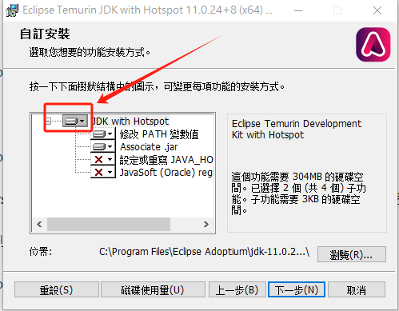
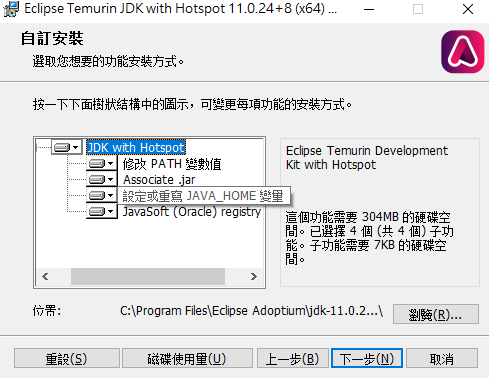

Java
（安装）“Jvav”——从安装到放弃
这里推荐使用Adoptium OpenJDK/JRE。
国内可以使用清华镜像站：
Java11-JDK：
https://mirrors.tuna.tsinghua.edu.cn/Adoptium/11/jdk/
Java11-JRE：
https://mirrors.tuna.tsinghua.edu.cn/Adoptium/11/jre/
一般Windows用户选择x64架构即可（如果你不清楚x64、aarch64、x86等代表什么含义，请自行百度：处理器架构）。
其他版本请到上级目录：
https://mirrors.tuna.tsinghua.edu.cn/Adoptium/
Windows
直接双击打开下载的msi安装程序，下一步，我接受，下一步，所有用户，下一步。
注意：此步骤时，如果不想手动配置环境变量，请选择“整个功能将安装在本地磁盘上”，确保“设定或重写JAVA_HOME变量”被启用，最好把所有选项(关联jre文件等)都启用：


其他步骤没有需要注意的。
Linux
直接
sudo apt install openjdk-11-jdk-headless #jdk11
#sudo apt install openjdk-11-jre-headless #jre11
（可以输入java/javac命令，然后终端会输出
java -version
Command 'java' not found, but can be installed with:
sudo apt install openjdk-11-jre-headless # version 11.0.20.1+1-0ubuntu1~20.04, or
sudo apt install default-jre # version 2:1.11-72
sudo apt install openjdk-16-jre-headless # version 16.0.1+9-1~20.04
sudo apt install openjdk-17-jre-headless # version 17.0.8.1+1~us1-0ubuntu1~20.04
sudo apt install openjdk-8-jre-headless # version 8u382-ga-1~20.04.1
sudo apt install openjdk-13-jre-headless # version 13.0.7+5-0ubuntu1~20.04
javac -version
Command 'javac' not found, but can be installed with:
sudo apt install openjdk-11-jdk-headless # version 11.0.20.1+1-0ubuntu1~20.04, or
sudo apt install default-jdk # version 2:1.11-72
sudo apt install openjdk-16-jdk-headless # version 16.0.1+9-1~20.04
sudo apt install openjdk-17-jdk-headless # version 17.0.8.1+1~us1-0ubuntu1~20.04
sudo apt install openjdk-8-jdk-headless # version 8u382-ga-1~20.04.1
sudo apt install openjdk-13-jdk-headless # version 13.0.7+5-0ubuntu1~20.04
sudo apt install ecj # version 3.16.0-1
）
新版本：
https://mirrors.tuna.tsinghua.edu.cn/help/Adoptium/
首先请安装依赖：
apt-get update && apt-get install -y wget apt-transport-https
然后信任 GPG 公钥：
wget -O - https://packages.adoptium.net/artifactory/api/gpg/key/public | tee /etc/apt/keyrings/adoptium.asc
随后将下列内容添加到 /etc/apt/sources.list.d/adoptium.list ：
操作系统版本Debian 12 (bookworm)Debian 11 (bullseye)Debian 10 (buster)Debian 9 (stretch) (EOL)Ubuntu 22.04 LTS (jammy)Ubuntu 20.04 LTS (focal)Ubuntu 18.04 LTS (bionic)Ubuntu 16.04 LTS (xenial) (EOL)
deb [signed-by=/etc/apt/keyrings/adoptium.asc] https://mirrors.tuna.tsinghua.edu.cn/Adoptium/deb bookworm main
再执行
apt-get update
之后可以安装软件包，例如：
apt-get install temurin-11-jdk